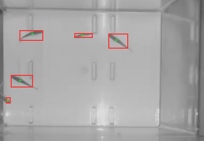
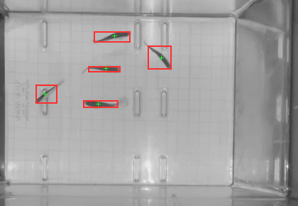
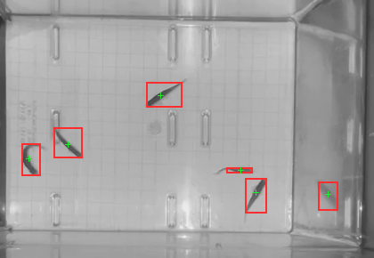
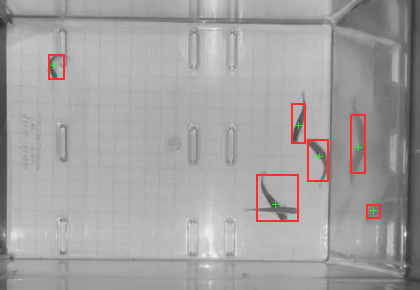
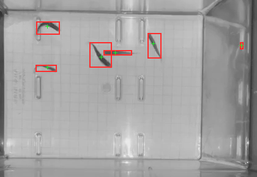
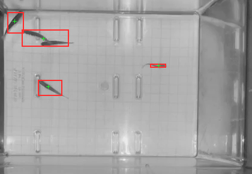
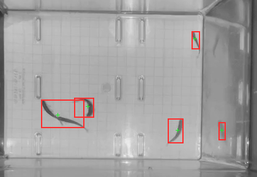
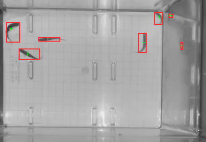
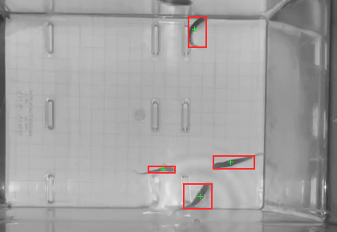
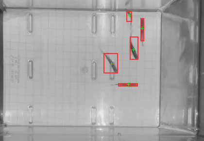

Matches known count
Background subtraction sampled the video every 200 ms. These ten frames span the clip. This tank contains five fish. Each card compares its detected dark blobs with that known count.










Tank walls and reflections can create false detections. Fish that touch or overlap can appear as one blob. A count of five does not guarantee that all five positions are correct. The 0.5-inch paper grid measures roughly 15–16 pixels per square in the central tank area, or about 30–32 pixels per inch; perspective makes this an approximate distance scale. The page shows the tank crop; exported coordinates refer to the original video.